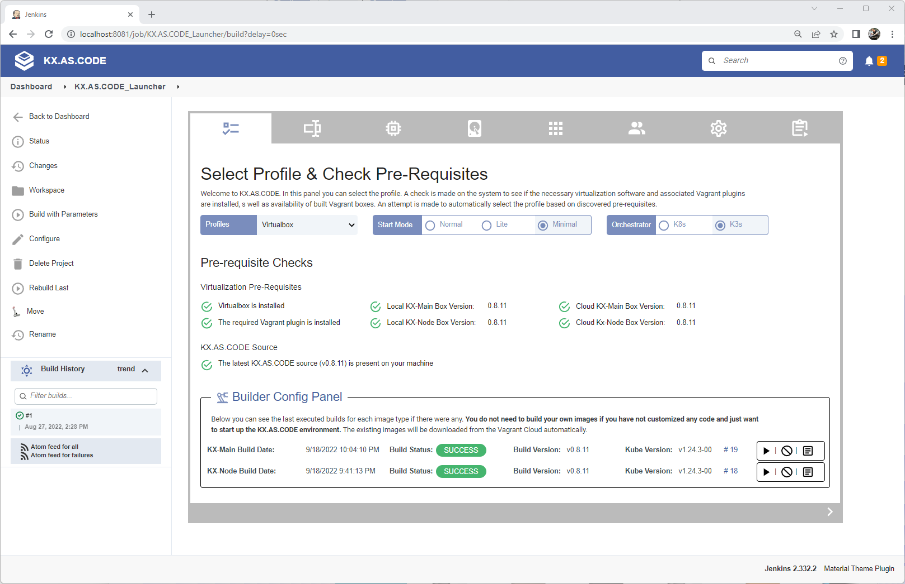

Local Virtualization#
If you just want to start KX.AS.CODE locally using the standard images, you do not need to build the images yourself. Both the main and worker nodes are available on the Vagrant Cloud.
For starting KX.AS.CODE without building the images yourself, follow the Quick Start Guide.
Prerequisites#
Note
In order to build KX.AS.CODE, you will need the following pre-requisites
- HashiCorp Packer - https://www.packer.io/downloads
- Your chosen virtualization solution:
- VMWare Workstation/Fusion
- Parallels Pro
- VirtualBox - https://www.virtualbox.org/wiki/Downloads
Warning
Apart from Virtualbox, all of the above will need to be licensed
Building the images#
It is possible to build the images using either the Jenkins based builder, or by executing packer commands manually.
The most comfortable way is to use the Jenkins based builder job.
Jenkins Builder Jobs#
The process for Windows and Mac is the same if using the Launcher. Following the following guide for starting the KX.AS.CODE Builder & Launcher.
Once the launcher is up, select the profile to build and then click on the play icon in the Builder Config Panel, either in the KX-Main or KX-Node row, depending on which one you want to build.
Info
You only need to build KX-Node if you intend to start KX.AS.CODE in a multi-node setup, either multiple KX-Main nodes, multiple KX-Node nodes or both.
Warning
If the Cloud Box Versions are not shown, you likely have an old version of Vagrant running. Please upgrade and try again.

When you click on the play button, the status will change to three moving dots, to show that the build is in progress.
When completed, the status will change again to either FAILED or SUCCESS.
At any time you can hover over the log icon in the config panel to see the latest logs.
If you want to see the full log, click on the log icon, which will result in the full log being opened in a new tab.
Manual#
The variables below are automatically generated with the correct values if you use the Jenkins job. Here you will need to ensure the correct values are in place.
KX-Main#
Example
packer build -force \
-on-error=abort \ # leave VM up on error for debugging
-only kx-main-virtualbox \ # change depending on profile. here the KX-Main image is being built for VirtualBox
-var compute_engine_build=false \ # Disables grub boot splash screen as it doesn't work on public clouds
-var memory=8192 \
-var cpus=2 \
-var video_memory=128 \
-var hostname=kx-main \
-var domain=kx-as-code.local \
-var version=0.8.8 \
-var kube_version=1.21.3-00 \
-var vm_user=kx.hero \
-var vm_password=L3arnandshare \
-var git_source_url=https://github.com/Accenture/kx.as.code.git \
-var git_source_branch=main \
-var git_source_user=**** \
-var git_source_token=**** \
-var base_image_ssh_user=vagrant \
./kx-main-local-profiles.json
KX-Node#
Info
You only need to build KX-Node if you intend to start KX.AS.CODE in a multi-node setup, either multiple KX-Main nodes, multiple KX-Node nodes or both.
Example
packer build -force \
-on-error=abort \ # leave VM up on error for debugging
-only kx-node-virtualbox \ # change depending on profile. here the KX-Main image is being built for VirtualBox
-var compute_engine_build=false \ # Disables grub boot splash screen as it doesn't work on public clouds
-var memory=8192 \
-var cpus=2 \
-var video_memory=128 \
-var hostname=kx-node \
-var domain=kx-as-code.local \
-var version=0.8.8 \
-var kube_version=1.21.3-00 \
-var vm_user=kx.hero \
-var vm_password=L3arnandshare \
-var git_source_url=https://github.com/Accenture/kx.as.code.git \
-var git_source_branch=main \
-var git_source_user=**** \
-var git_source_token=**** \
-var base_image_ssh_user=vagrant \
./kx-node-local-profiles.json
To get the checksum, just visit the link https://download.virtualbox.org/virtualbox and navigate to the latest version. In the version directory you will see a file called "SHA256SUMS". Find the checksum for the ISO and add that to json files.
- base-vm\kx.as.code-main.json
- base-vm\kx.as.code-worker.json
Info
You do not need to download the ISO files for the operating system or for the guest additions, as Packer will do this automatically.
Additional Notes#
Parallels#
Note, for Parallels you will need the business edition, as without it, the build process will not work. See here for more information. In particular, only the business edition supports Integrations With Vagrant/Docker/Packer/Minikube other differences between the standard and business editions of Parallels.
Also, you need to download and install the Parallels Virtualization SDK
Once done, you are good to go. Head to the Quick Start Guide, and select Parallels as the profile in the drop-down and build the images using the build panel in the first tab.
As with VirtualBox, you can also trigger the build process manually. Replace kx-main-virtualbox in the example above with kx-main-parallels for building the main node, and kx-node-virtualbox with kx-node-parallels for building the cluster node.
VMWare#
Info
The same OVA is used to deploy to both VMWare Desktop and to VMWare vSphere.`
For VMWare you will need a licensed version of either VMWare Fusion (Mac) or VMWare Workstation (Windows).
Updating VirtualBox Guest Additions#
Warning
For VirtualBox you will need to ensure you have the matching guest additions version in the worker and master node json files.
{
"guest_additions_url": "https://download.virtualbox.org/virtualbox/6.1.16/VBoxGuestAdditions_6.1.16.iso",
"guest_additions_checksum": "88db771a5efd7c048228e5c1e0b8fba56542e9d8c1b75f7af5b0c4cf334f0584"
}
Building on MacOSX / Linux#
Important
Important. Currently, this process does not work on ARM based processors. However, work is in progress to enable ARM64. See here.